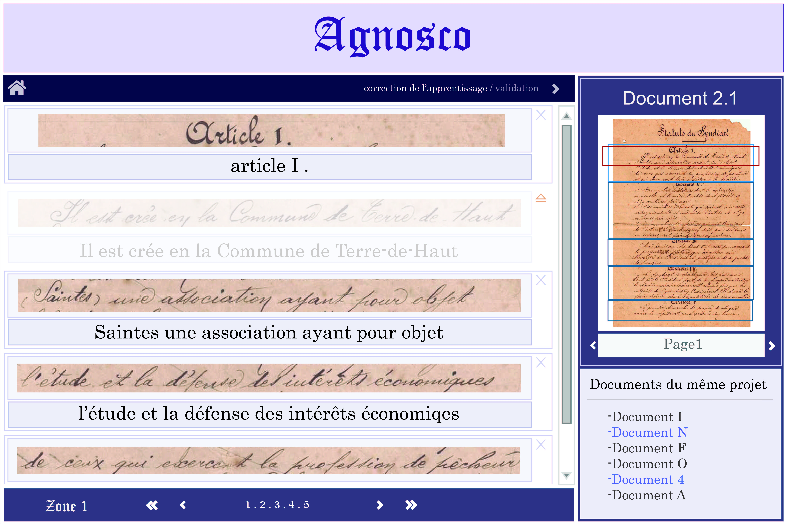

Sur la page d'accueil d'Agnosco, l'utilisateur a accès à tous ses projets et peut également en créer de nouveau en sélectionnant les documents scannés qu'il veut transcrire.

Agnosco propose également une page de découpe du document pour localiser manuellement les paragraphes du manuscrit, afin de permettre une découpe ligne par ligne du document.

Une fois que le document est découpé ligne par ligne en imagettes, elles sont affichées les unes à la suite des autres avec la transcription qui leur correspond dans la page d'annotation manuelle. L'utilisateur peut taper ces transcriptions à la main et les modifier. Grâce à la croix en haut à droite de l'imagette, il peut également cacher un exemple jugé peu pertinent qui ne sera pris en compte pour l'apprentissage.

Agnosco propose une page de visualisation des résultats de l'apprentissage du reconnaisseur où l'utilisateur peut modifier les transcriptions erronées.

Enfin, l'étape finale de la création de bases d'apprentissage est la validation des transcriptions dans la page de validation. Par un simple appui sur la touche Entrée, l'utilisateur peut valider toutes les transcriptions affichées sur la page qui n'ont pas été cachées au préalable.